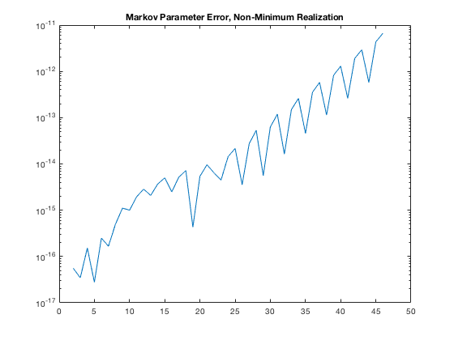
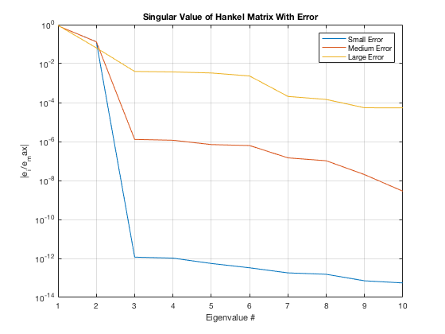
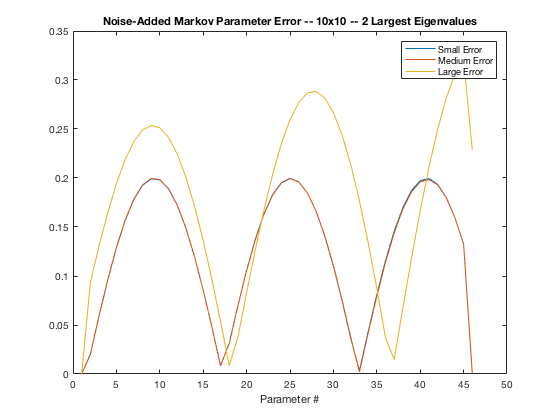
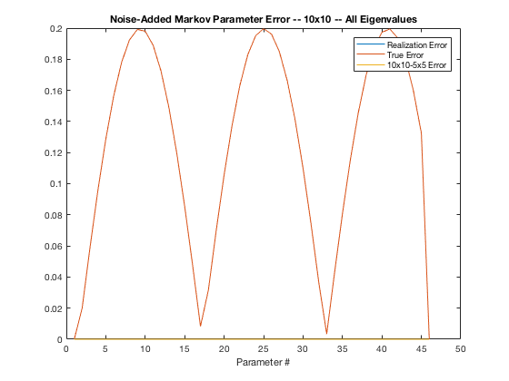

Homework 5
Contents
Problem 1
Starting with a spring-mass system of Homework 1, generate the same discrete-time state-space model with a sampling interval of 0.2 sec. Use position of the mass as your measured output variable.
clear
A = [0 1
-1 0];
B = [0; 1];
C = [1 0];
D = 0;
dt = 0.2;
syst = c2d(ss(A,B,C,D),dt);
The system will be stored in the syst variable.
Problem 2
Form the smallest size Hankel matrices H(0) and H(1) that would allow you to recover a realization of A,B,C correctly. Check your results by generating the Markov parameters from your realized A,B,C and compare them to the true Markov parameters.
n = 45; q = 1; r = 1; alph = 3; bet = 3; MP = zeros(1,n+1); MP(1) = syst.D; for i=1:n MP(i+1) = syst.C*syst.A^(i-1)*syst.B; end H_0 = hankel(MP(2:alph+1),MP(alph+1:alph+bet)); H_1 = hankel(MP(3:alph+2),MP(alph+2:alph+bet+1)); [U,S,V] = svd(H_0); sing_n = diag(S(S>1e-13)); n_e = length(nonzeros(sing_n)); Un = U(:, 1:n_e); Vn = V(:, 1:n_e); A_r = sing_n^-0.5*Un'*H_1*Vn*sing_n^-0.5; B_0 = sing_n^0.5*Vn'; B_r = B_0(:,1:r); C_0 = Un*sing_n^0.5; C_r = C_0(1:q,:); MP_r_5 = zeros(1,n+1); MP_r_5(1) = 0; for j=1:n MP_r_5(j+1) = C_r*A_r^(j-1)*B_r; end figure semilogy(abs(MP - MP_r_5)); title('Markov Parameter Error, Minimum Realization')

Problem 3
Repeat (2) but this time work with ?larger size? Hankel matrices H(0) and H(1), say make them 10- by-10. You should see the zero singular values this time. Confirm that you can still recover a set of A,B,C of the minimum order from the larger size Hankel matrices. This is particularly useful because we don?t usually know what the true order of the system is in advance. The Hankel matrix would tell us what the true order is. Again, confirm that your realization is correct by comparing the Markov parameters from the realization to the true Markov parameters.
alph = 10; bet = 10; H_0 = hankel(MP(2:alph+1),MP(alph+1:alph+bet)); H_1 = hankel(MP(3:alph+2),MP(alph+2:alph+bet+1)); [U,S,V] = svd(H_0); sing_n = diag(S(S>1e-93)); n_e = length(nonzeros(sing_n)); Un = U(:, 1:n_e); Vn = V(:, 1:n_e); A_r = sing_n^-0.5*Un'*H_1*Vn*sing_n^-0.5; B_0 = sing_n^0.5*Vn'; B_r = B_0(:,1:r); C_0 = Un*sing_n^0.5; C_r = C_0(1:q,:); MP_r = zeros(1,n+1); MP_r(1) = 0; for j=1:n MP_r(j+1) = C_r*A_r^(j-1)*B_r; end semilogy(abs(MP - MP_r)); title('Markov Parameter Error, Non-Minimum Realization')
Problem 4
What one hopes to see is 2 significant singular values followed by 8 much smaller singular values. Thus we can still tell that the true order of the system is 2, and we can just keep the 2 larger singular values to obtain a realization of order 2 after throwing out the 8 singular values associated with errors in the Markov parameters. First, see for yourself how sensitive this expected sharp drop in singular values is when the Markov parameters are slightly in error. Show plots of the singular values (on semi-log scale) for various cases (small error, medium error, large error, etc.)
x1 = 0.000001; x2 = 0.001; x3 = .1;
Here, we introduce error as a noise across the entire matrix at magintudes 0.1, 1e-3, 1e-6.
alph = 10; bet = 10; MP_s = MP + x1*(rand(size(MP))); MP_m = MP + x2*(rand(size(MP))); MP_l = MP + x3*(rand(size(MP))); H_0_s = hankel(MP_s(2:alph+1),MP_s(alph+1:alph+bet)); H_1_s = hankel(MP_s(3:alph+2),MP_s(alph+2:alph+bet+1)); H_0_m = hankel(MP_m(2:alph+1),MP_m(alph+1:alph+bet)); H_1_m = hankel(MP_m(3:alph+2),MP_m(alph+2:alph+bet+1)); H_0_l = hankel(MP_l(2:alph+1),MP_l(alph+1:alph+bet)); H_1_l = hankel(MP_l(3:alph+2),MP_l(alph+2:alph+bet+1)); [U_s,S_s,V_s] = svd(H_0_s); sing_n_s = diag(S_s(S_s>1e-93)); [U_m,S_m,V_m] = svd(H_0_m); sing_n_m = diag(S_m(S_m>1e-93)); [U_l,S_l,V_l] = svd(H_0_l); sing_n_l = diag(S_l(S_l>1e-93)); semilogy(sing_n_s/max(sing_n_s)); grid on hold on semilogy(sing_n_m/max(sing_n_m)); semilogy(sing_n_l/max(sing_n_l)); title('Singular Value of Hankel Matrix With Error') xlabel('Eigenvalue #'); ylabel('|e_i/e_max|'); legend('Small Error','Medium Error','Large Error'); hold off
Problem 5
Keeping only the two largest singular values, we have the following Markov Parameters.
L = 2; sing_n_s = diag(S_s(find(S_s,L))); sing_n_m = diag(S_m(find(S_m,L))); sing_n_l = diag(S_l(find(S_l,L))); n_e_s = length(nonzeros(sing_n_s)); n_e_m = length(nonzeros(sing_n_m)); n_e_l = length(nonzeros(sing_n_l)); Un_s = U_s(:, 1:n_e_s); Vn_s = V_s(:, 1:n_e_s); Un_m = U_m(:, 1:n_e_m); Vn_m = V_m(:, 1:n_e_m); Un_l = U_l(:, 1:n_e_l); Vn_l = V_l(:, 1:n_e_l); A_r_s = sing_n_s^-0.5*Un_s'*H_1_s*Vn_s*sing_n_s^-0.5; B_0_s = sing_n_s^0.5*Vn_s'; B_r_s = B_0_s(:,1:r); C_0_s = Un_s*sing_n_s^0.5; C_r_s = C_0_s(1:q,:); A_r_m = sing_n_m^-0.5*Un_m'*H_1_m*Vn_m*sing_n_m^-0.5; B_0_m = sing_n_m^0.5*Vn_m'; B_r_m = B_0_m(:,1:r); C_0_m = Un_m*sing_n_m^0.5; C_r_m = C_0_m(1:q,:); A_r_l = sing_n_l^-0.5*Un_l'*H_1_l*Vn_l*sing_n_l^-0.5; B_0_l = sing_n_l^0.5*Vn_l'; B_r_l = B_0_l(:,1:r); C_0_l = Un_l*sing_n_l^0.5; C_r_l = C_0_l(1:q,:); MP = zeros(1,n+1); MP(1) = syst.D; MP_r_s = zeros(1,n+1); MP_r_s(1) = 0; MP_r_m = zeros(1,n+1); MP_r_m(1) = 0; MP_r_l = zeros(1,n+1); MP_r_l(1) = 0; for j=1:n MP(i+1) = syst.C*syst.A^(i-1)*syst.B; MP_r_s(j+1) = C_r_s*A_r_s^(j-1)*B_r_s; MP_r_m(j+1) = C_r_m*A_r_m^(j-1)*B_r_m; MP_r_l(j+1) = C_r_l*A_r_l^(j-1)*B_r_l; end error_s = abs(MP-MP_r_s); error_m = abs(MP-MP_r_m); error_l = abs(MP-MP_r_l); figure plot(error_s); hold on plot(error_m); plot(error_l); title('Noise-Added Markov Parameter Error -- 10x10 -- 2 Largest Eigenvalues') xlabel('Parameter #') legend('Small Error','Medium Error','Large Error')
Problem 6
If we fail to see a sharp drop in the singular values, then we have no choice but keeping say all of them. Your realized A matrix is now 10-by-10, and B is 10-by-1 and C is 1-by-10. We call this a non-minimum order realization. Compare the Markov parameters of this non-minimum order realization with the true Markov parameters and also with the slightly imperfect Markov parameters that you used in the realization. Also compare them with the Markov parameters obtained from the minimum order realization in (5) by just keeping the 2 largest singular values.
L = 10; sing_n_s = diag(S_s(find(S_s,L))); sing_n_m = diag(S_m(find(S_m,L))); sing_n_l = diag(S_l(find(S_l,L))); n_e_s = length(nonzeros(sing_n_s)); n_e_m = length(nonzeros(sing_n_m)); n_e_l = length(nonzeros(sing_n_l)); Un_s = U_s(:, 1:n_e_s); Vn_s = V_s(:, 1:n_e_s); Un_m = U_m(:, 1:n_e_m); Vn_m = V_m(:, 1:n_e_m); Un_l = U_l(:, 1:n_e_l); Vn_l = V_l(:, 1:n_e_l); A_r_s = sing_n_s^-0.5*Un_s'*H_1_s*Vn_s*sing_n_s^-0.5; B_0_s = sing_n_s^0.5*Vn_s'; B_r_s = B_0_s(:,1:r); C_0_s = Un_s*sing_n_s^0.5; C_r_s = C_0_s(1:q,:); A_r_m = sing_n_m^-0.5*Un_m'*H_1_m*Vn_m*sing_n_m^-0.5; B_0_m = sing_n_m^0.5*Vn_m'; B_r_m = B_0_m(:,1:r); C_0_m = Un_m*sing_n_m^0.5; C_r_m = C_0_m(1:q,:); A_r_l = sing_n_l^-0.5*Un_l'*H_1_l*Vn_l*sing_n_l^-0.5; B_0_l = sing_n_l^0.5*Vn_l'; B_r_l = B_0_l(:,1:r); C_0_l = Un_l*sing_n_l^0.5; C_r_l = C_0_l(1:q,:); for j=1:n MP(i+1) = syst.C*syst.A^(i-1)*syst.B; MP_r_s(j+1) = C_r_s*A_r_s^(j-1)*B_r_s; MP_r_m(j+1) = C_r_m*A_r_m^(j-1)*B_r_m; MP_r_l(j+1) = C_r_l*A_r_l^(j-1)*B_r_l; end error_s = abs(MP_r_s-MP_s); error_a = abs(MP_r_s-MP); error_5 = abs(MP_r_s-MP_r_5); figure plot(error_s); hold on plot(error_a); plot(error_5); title('Noise-Added Markov Parameter Error -- 10x10 -- All Eigenvalues') xlabel('Parameter #') legend('Realization Error','True Error','10x10-5x5 Error')